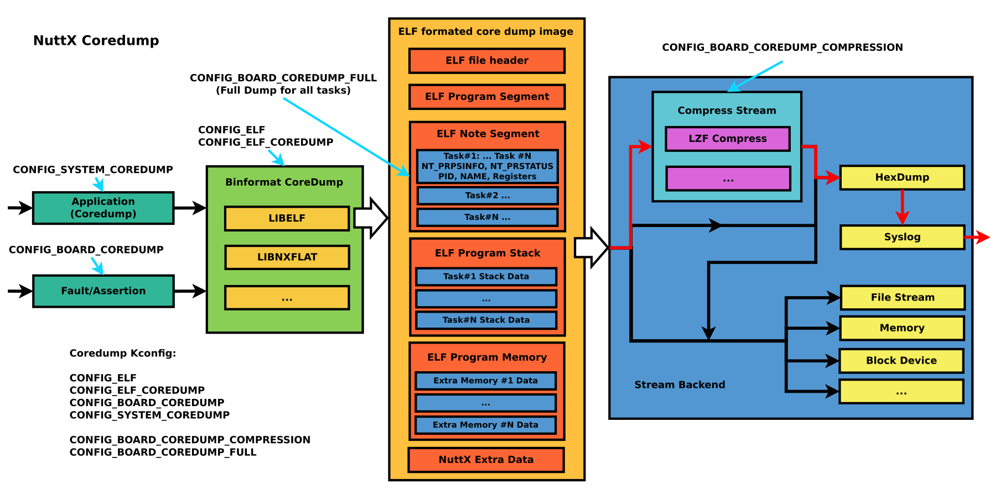
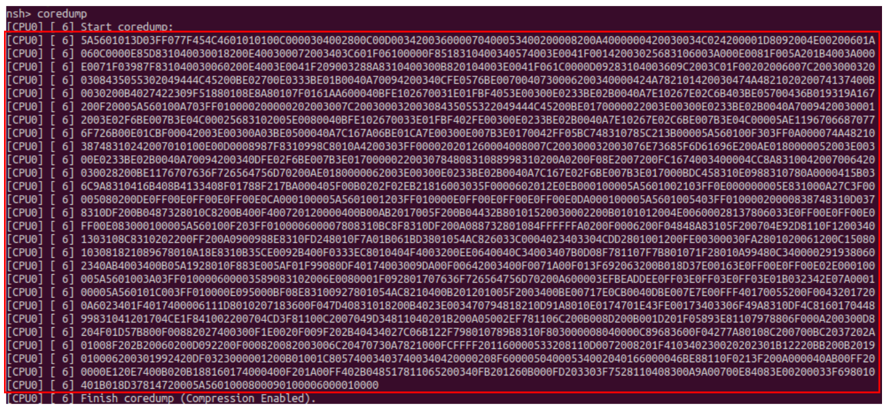
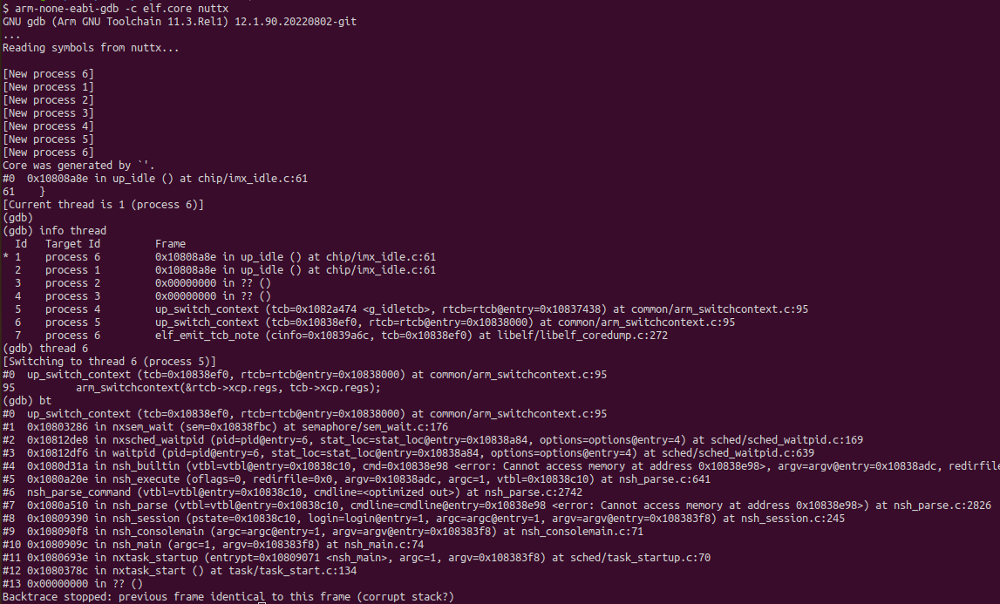

Core Dump
Overview
How to use
Enable NuttX Core dump
Enable Kconfig
CONFIG_ELF=y /* Enable ELF */ CONFIG_ELF_COREDUMP=y /* Enable ELF Coredump */ CONFIG_BOARD_COREDUMP=y /* Enable Board Coredump, if exceptions and assertions occur, */ CONFIG_SYSTEM_COREDUMP=y /* Enable coredump in user command, which can capture the current state of one or all threads when the system is running, the output can be redirect to console or file */ CONFIG_BOARD_COREDUMP_COMPRESSION=y /* Default y, enable Coredump compression to reduce the size of the original core image */ CONFIG_BOARD_COREDUMP_FULL=y /* Default y, save all task informations */
Run Coredump on nsh (CONFIG_SYSTEM_COREDUMP=y)
Parameters of coredump tool
$ coredump <pid> /* If pid is specified, coredump will only capture the thread with the specified pid, otherwise all threads will be captured */ $ coredump <filename> /* If filename is specified, then coredump will be output to the specified file by default, otherwise it will be redirect in stdout stream */
Capture coredump from stdout
Save the print of the red frame part in the figure as file
$ cat elf.dump [CPU0] [ 6] 5A5601013D03FF077F454C4601010100C0000304002800C00D003420036000070400053400200008200A4000000420030034C024200001D8092004E00200601A ... [CPU0] [ 6] 401B018D37814720005A5601000800090100006000010000
Convert the dump file
If the core file is post-processed by lzf compress and hexdump stream, execute the coredump script (tools/coredump.py) to convert hex to binary and lzf decompression, If the -o parameter is not added in commandline, the output of <original file name>.core will be automatically generated:
$ ./nuttx/tools/coredump.py elf.dump Core file conversion completed: elf.core
Analysis by gdb
After generating elf.core, combined with compiled nuttx.elf, you can view the call stack and related register information of all threads directly through gdb:
(NOTE: Toolchain version must be newer than 11.3)
$ prebuilts/gcc/linux/arm/bin/arm-none-eabi-gdb -c elf.core nuttx